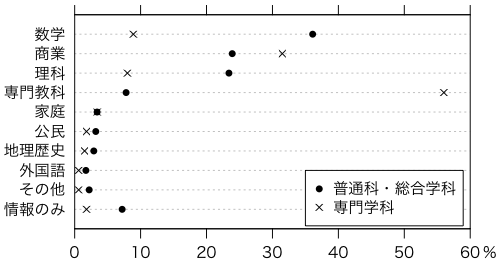

CECのページにある報告書『「情報大航海時代」における制度的課題に関する高等学校等における情報教育の実態調査 実施報告書』（2009年3月，財団法人コンピュータ教育開発センター）のp.18の教科「情報」以外の担当教科を描いてみます。
データ（スペース区切りテキスト）です：
普通科・総合学科 専門学科
数学 36.1 8.9
商業 23.9 31.5
理科 23.4 8.0
専門教科 7.8 56.0
家庭 3.4 3.4
公民 3.2 1.8
地理歴史 2.9 1.5
外国語 1.7 0.6
その他 2.2 0.6
情報のみ 7.2 1.8
Rでこのデータのグラフを描くための初期設定です：
par(family="HiraKakuPro-W3") # Macのフォント指定
par(las=1) # 縦軸の字も横向きに
par(mgp=c(2,0.8,0)) # 目盛り位置調整
par(xaxs="i") # xの範囲をぴったり
options(encoding="SJIS") # Macでコピペ時の文字コードをSJISに
このページの最初のデータをクリップボードにコピーして，次のどちらかを打ち込みます：
X = read.table(pipe("pbpaste")) # Mac（非X Window）
X = read.table("clipboard") # 上記以外
ドットプロットを描きます：
dotchart(rev(X[,1]), labels=rev(rownames(X)), pch=16, xlim=c(0,60))
points(rev(X[,2]),1:10)
もうちょっと凝ったところ：
dotchart(rev(X[,1]), pch=16, xlim=c(0,60))
points(rev(X[,2]), 1:10, pch=4)
mtext(rev(rownames(X)), side=2, at=1:10, line=0.5)
mtext("%", side=1, at=63, line=0.8)
axis(3, labels=FALSE)
legend(35, 3, c("普通科・総合学科","専門学科"),
pch=c(16,4), bg="white")
次のようになりました：

Last modified: 2009-04-26 18:23:54